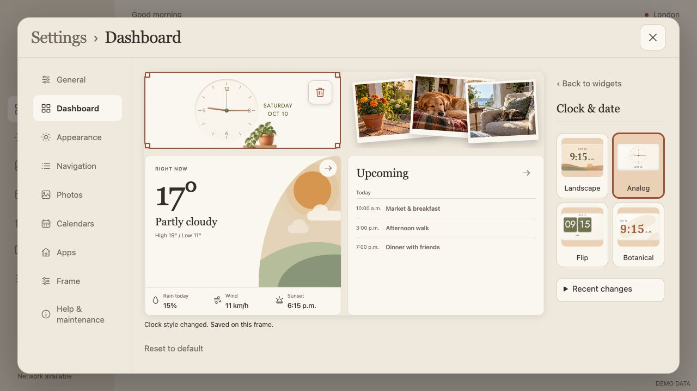
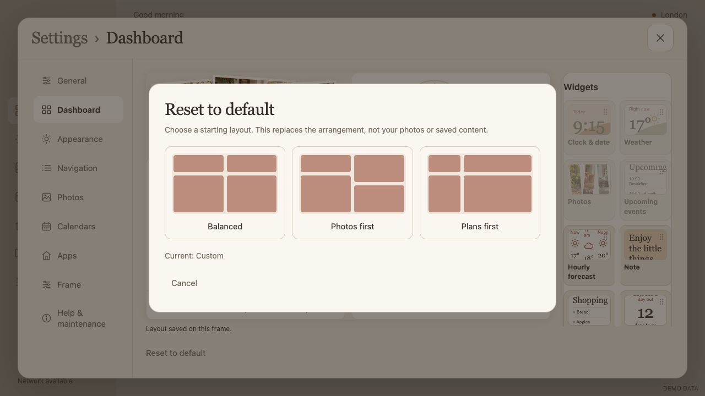
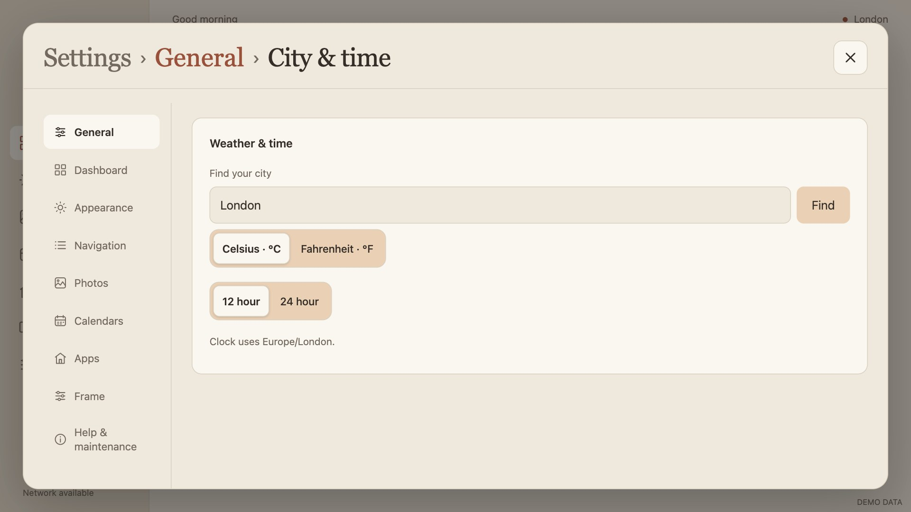

Skylit — live dashboard and General settingsSkylit · October 13, 2026
More room to arrange.
Fewer steps to save.
The dashboard now saves completed edits immediately. One right-hand panel switches between the widget gallery and the selected widget’s options, while Settings navigation stays visible.
All images use synthetic preview data. Code and APK are prepared; this pass has not been installed or tested on the physical frame.
A larger editing canvas
The bottom gallery and Apply/Cancel action bar are gone. Click empty canvas to deselect, or use Back to widgets when the canvas is full. At 1280×720 the canvas is approximately 734×449 CSS pixels.
Selection, removal and live saving
Selected widgets show a small trash button. Removing a widget removes it from the dashboard; it does not delete its photos or calendar data. Style selections and additions save immediately. Dragging and resizing save on release. A failed save restores the last saved layout and shows an error.

Selected clock: options in the shared panel, trash on the canvas.Reset to default
The button below the canvas opens a dialog with three visual starting layouts. Selecting one applies it immediately; Cancel leaves the current layout alone. Recent changes remains available for recovery.

Three visual defaults in a dialog.Photo and weather treatments
Each widget now has visual style choices, using the same curated photos and forecast data. No new data source or account setup is involved.
See all 24 size and style checks
General is the starting point
Common display choices belong here: Light/Dark/Automatic and text size. City & time and Daily routine open from a second grouped card. Appearance keeps palettes and Momo; Frame keeps updates and Android recovery.
One heading, with context
The main header reads Settings › Area. Nested pages include a clickable parent. Repeated area headings are removed, reclaiming vertical space without removing card labels.

Settings › General › City & timeSave behaviour across Settings
Everyday preferences already save immediately. Dashboard now follows that convention. Picture crops/details, written notes and connection forms keep explicit save steps; imports and destructive actions retain review or confirmation.
Verification
- 92 Node tests and 19 Python tests; TypeScript check.
- 13 Settings workflow groups, 61 captures, no runtime errors.
- Live layout persistence, gesture commit, reload, storage-failure rollback, selection and removal.
- 24 photo/weather style and size combinations with loaded image and weather text bounds checks.
- Photo selection and movement retain image nodes; actual photo changes still refresh.
Signed APK built and signature verified. The public-data scan of source, Git history and the APK completed with zero findings.
Physical acceptance remains pending. The frame was unavailable during this work; these browser checks do not prove native Home control, YouTube playback or the phone-management listener on hardware.